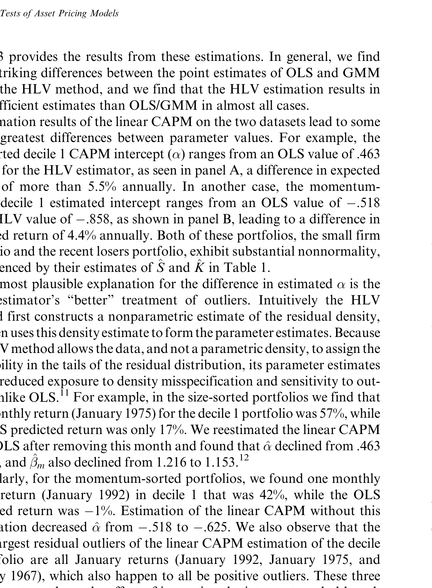
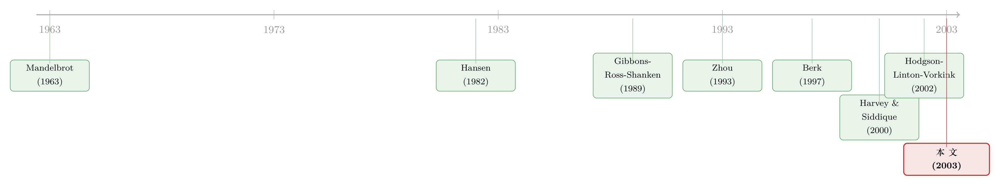

正态分布早被否决，可我们的 CAPM 检验还在用它的尺子量天下
本文读的是 Vorkink (2003, Review of Financial Studies)：在「收益率服从椭圆分布」这一既弱又恰好能撑起线性 CAPM 的假设下，作者用 HLV 半参数估计构造了一个新的资产定价检验。结果出人意料——在按市值排序的组合上，这个新检验不拒绝 CAPM，而同一份数据上的 OLS 与 GMM 检验都强烈拒绝；进一步追查，拒绝的「元凶」竟是小盘股里那么几个极端收益。一句话：很多对 CAPM 的拒绝，也许只是被几个离群点和一把错配的尺子合谋制造出来的。
1 引言：一个所有人都承认、却所有人都不当真的事实
做实证资产定价的人，几乎没有谁不知道这样一个「程式化事实 (stylized fact)」：股票收益率不是正态的。它的三阶矩（偏度）和四阶矩（峰度）都偏离正态分布，尤其是尖峰厚尾，这一点早在 Mandelbrot (1963) 和 Fama (1965) 那里就被反复指出，后来 Affleck-Graves and McDonald (1989)、Zhou (1993) 又一次次确认。
可奇怪的是，承认归承认，真到了检验资产定价模型的时候，大家用的工具却几乎全部建立在「正态」这块地基上。最常用的普通最小二乘 (ordinary least squares, OLS)，只有在多元正态假设下才是有效率的；后来很多人转向 Hansen (1982) 的广义矩估计 (generalized method of moments, GMM)，它确实大大放松了分布假设——但放松是有代价的：在非正态下，GMM 一般达不到最小方差，检验的功效 (power) 因此打了折扣，甚至 Ferson and Foerster (1994) 还发现 GMM 检验统计量在有限样本里会有「反常」的表现。
于是我们陷入一个尴尬的处境：明知道收益率不正态，手里的检验工具要么假装它正态（OLS），要么干脆对分布形状什么都不说（GMM）。前者有偏，后者无力。难怪关于「风险与收益到底是什么关系」这个金融学最古老的问题，至今众说纷纭。
那么，一个自然的问题是：有没有第三条路——既不假装正态，又不彻底放弃对分布的刻画，而是恰好用上「收益率到底长什么样」这条信息？
这正是本文的出发点。
2 椭圆分布：那个「刚刚好」的假设
要理解这篇论文，得先认识一个名字听起来吓人、其实很贴心的分布族：椭圆分布 (elliptical distributions)。
一个随机向量 \(u\) 是椭圆分布的，当且仅当它的密度 \(p(u)\) 可以写成
$$ p(u) = g\!\left(u^{\top}\Sigma^{-1}u\right) $$
的形式——也就是说，密度只通过一个二次型 \(u^{\top}\Sigma^{-1}u\) 依赖于 \(u\)，等高线是一圈套一圈的椭球。正态分布是它的一个特例（取 \(g\) 为指数函数），但这个家族还装得下很多别的成员：带条件异方差的 GARCH、方差无穷的柯西分布、对称的 Pareto–Lévy、中心化的学生 \(t\) 分布……它们共同的特点是：偏度可以没有，峰度却可以随便调。
为什么偏偏是椭圆分布？这里藏着本文最讲究的一步。Berk (1997) 证明过一个相当深刻的结论：当投资者最大化「行为良好」的期望效用时，要想得到线性 CAPM，椭圆分布是一个必要条件（相关讨论亦见 Chamberlain (1983) 与 Owen and Rabinovitch (1983)）。换句话说，椭圆性不是为了数学方便硬塞进来的额外假设，它恰恰是线性 CAPM 这个被检验对象自带的前提。
这就妙了。我们检验 CAPM，本来就默认了收益率是椭圆的；那为什么不干脆把「椭圆」这条信息用足，而要么往上加一个更强的「正态」（OLS），要么往下退到一个更弱的「什么都不假设」（GMM）呢？椭圆分布在这里是那个刚刚好的落点：它允许厚尾（这是数据里最普遍的特征），又不至于宽泛到丢掉效率。
（关于「正态被数据否决、但这件事到底要不要紧」的另一面，可参见《正态分布被数据一票否决，你的组合却几乎毫发无伤》——那篇说的是组合选择，本文说的是模型检验，两条线在「正态假设值不值得较真」这一点上正好对望。）
3 三把尺子：OLS、GMM 与 HLV
要把故事讲透，先把被检验的模型摆出来。本文研究的是均值-方差期望收益模型，即资产 \(i\) 的超额收益线性地依赖于它对一组因子的协方差（beta）：
$$ r_{i,t} = \alpha_i + \beta_i F_t + u_{i,t}, \qquad i=1\ldots N,\ t=1\ldots T $$
写成向量形式就是
$$ r_t = \alpha + \beta F_t + u_t $$
这里 \(r_t\)、\(u_t\)、\(\alpha\) 都是 \(N\times 1\)，\(\beta\) 是 \(N\times k\)。检验思路再经典不过：如果因子 \(F\) 真的张成了均值-方差前沿、模型真的解释了期望收益，那么截距 \(\alpha\) 在统计上就该全为零。于是原假设是
$$ H_0:\ \alpha_i = 0,\quad i = 1,\ldots,N $$
剩下的，就是用什么尺子去量这个 \(\alpha\)。本文摆出了三把。
第一把，OLS。标准的 Wald 统计量是
$$ J_{OLS} = \hat\alpha^{\top}\,\mathrm{var}(\hat\alpha)^{-1}\,\hat\alpha \;\overset{a}{\sim}\; \chi^2_N $$
它的问题在前面说过：一旦存在与因子相关的条件异方差，OLS 的标准误就有偏，检验的 size 失准。Zhou (1993) 给出过一个针对峰度的乘法修正
$$ J_{C\text{-}OLS} = J_{OLS}\cdot \eta^{-1} \;\overset{a}{\sim}\; \chi^2_N $$
其中 \(\eta = 1+\#\)，\(\# = \kappa_x/\!\left(N(N+2)\right)\)，\(\kappa_x\) 是 Mardia (1970) 的多元峰度度量。正态时 \(\#=0\)，修正消失；有超额峰度时 \(\#>0\)，于是 \(J_{C\text{-}OLS} < J_{OLS}\)。但 Zhou 的修正只动了「方差」，没动「估计本身」——它把高阶矩的信息用在了纠偏上，却没用在提高估计效率上。
第二把，GMM。矩条件来自 \(E(u_t)=E(u_tF_t)=0\)：
$$ s(\alpha,\beta) = \sum_{t=1}^{T}\begin{pmatrix} u_t \\ u_t F_t\end{pmatrix} $$
本文分析了两个 GMM 统计量，一个在原假设约束下估计（\(J_{GMM1}\)），一个跟随 Harvey and Zhou (1993) 用约束与非约束目标函数之差构造（\(J_{GMM2}\)）。GMM 的好处是稳健，坏处是非正态下不再有效率，功效不足。
第三把，也是本文的主角，HLV。这名字来自 Hodgson, Linton, and Vorkink (2002)。它和 GMM 的根本区别在于：GMM 只在 OLS 估计的基础上修标准误，而 HLV 把椭圆假设直接揉进了系数估计本身。它是半参数的——用非参数的部分让数据自己决定分布的峰度形状（即那个未知的 \(g\)），用参数的部分锁定「椭圆」这个结构。两者配合，得到的估计 \(\tilde\theta\) 有一个漂亮的渐近性质：
这一行就是整篇文章的「核武器」。它说的是：\(\tilde\theta\) 的渐近方差等于 \(I^{-1}\)，也就是极大似然估计的方差。在不知道收益率服从哪种椭圆分布的前提下，HLV 估计的效率却与「上帝告诉你分布」时的 MLE 一样高。这就是半参数估计里所谓的「自适应性」——非参数部分负责从数据里学出峰度，参数部分负责守住椭圆结构，两者拼起来，刚好把信息榨干而又不过度承诺。
有了这个分布，检验就水到渠成。仿照 \(J_{OLS}\)，本文构造
$$ J_{HLV} = \tilde\alpha^{\top}\,\mathrm{var}(\tilde\alpha)^{-1}\,\tilde\alpha \;\overset{a}{\sim}\; \chi^2_N $$
形式上和 OLS 的 Wald 检验一模一样，区别全在于 \(\tilde\alpha\) 是用 HLV 估出来的——它对厚尾、对离群点，都更「拎得清」。
4 数据：收益率到底服从什么分布？
讲完工具，得回头验一件事：凭什么说收益率是椭圆的？
数据是 CRSP 1963 年 7 月到 1995 年 12 月的月度收益，覆盖 NYSE、NASDAQ、AMEX。作者把股票排成两套各 10 个的十分位组合：一套按市值 (size) 排，这是实证里用滥了的经典数据集；另一套按前期表现 (momentum) 排，依据 Jegadeesh and Titman (1993) 的发现，用 \(t-12\) 到 \(t-2\) 的累计收益分组、持有一个月。
单变量统计先给了一个清晰的图景：按市值排序的组合里，最小那一档的超额峰度高达 3.67，并几乎单调地降到最大档的 0.78；所有组合的峰度都在 .01 水平上拒绝正态，而偏度只有 5 个组合显著。动量组合则呈现另一种规律——偏度从输家档（decile 1）的 +1.10 单调下降到赢家档（decile 10）的 -0.58，这与 Harvey and Siddique (2000) 的发现一致。
接着，多元层面的检验（Table 2）把这件事钉死了：Mardia (1970) 的多元偏度和多元峰度，在所有情形下都在 .01 水平拒绝正态。正态分布，被干净利落地否决了。
但真正关键的一步在于：否决了正态，不等于否决了椭圆。本文用 Beran (1979) 专门针对「椭圆对称」的检验统计量 \(ES_T\)，去问一个比 Zhou (1993) 更一般的问题——收益率是不是椭圆分布的？结果是：不拒绝。按市值排序的收益其统计量为 -1.71（p 值 .09），CAPM 残差为 -1.22（p 值 .22）；动量组合的收益为 0.58（p 值 .56）。
于是地基稳了：正态不成立，椭圆站得住。那把「刚刚好」的尺子，是有资格用的。
5 反转：被几个离群点制造出来的拒绝
现在到了全文最戏剧性的部分。
把三把尺子同时架到按市值排序的数据上检验 CAPM，会看到什么？
OLS 和 GMM 都强烈拒绝 CAPM，而 HLV 不拒绝。
如表 3 所示，同一份数据、同一个模型，只因换了估计方法，结论就走向了相反的方向。这不是小数点后的差异，而是「拒绝」与「不拒绝」的定性翻转。

Table 3: provides the results from these estimations. In general, we find
那到底是谁错了？作者顺藤摸瓜，把 OLS/GMM 的拒绝拆开看，发现拒绝主要由少数几个极端收益驱动，而这些离群点的影响力，集中砸在了小市值的那几档上。OLS 对离群点没有抵抗力——几个尾部的大数，就能把截距 \(\hat\alpha\) 撬出零点；而 HLV 因为让数据自己学出了厚尾的形状，对这些离群点是稳健的，不会被它们牵着走。
换句话说：所谓「CAPM 被市值组合拒绝」，很可能不是 CAPM 错了，而是几个离群点 + 一把假设正态的尺子，合谋制造出来的幻觉。这与 Knez and Ready (1997) 的精神遥相呼应——他们用「最小截尾平方 (least trimmed squares)」发现，Fama and French (1992, 1993) 那类横截面回归对离群点高度敏感。
更有意思的是动量数据集，它给出了一个方向相反的教训。在这里离群点同样作祟，但它们主要系在一月份的收益上；而且这一次，离群点让 OLS/GMM 低估了线性 CAPM 的定价误差。在一个极端的对比里，OLS/GMM 与 HLV 估出的期望年收益之差竟高达 5%。所以离群点不是单向地「制造拒绝」——它既能凭空造出拒绝，也能把真实的错误定价悄悄抹平，关键看尺子准不准。
（CAPM 被各种异象「拒绝」的故事由来已久，关于风险其实能不能收编这些异象，可参见《会「看天」的 beta：当风险收编了价值与规模，动量却躲进了商业周期》；而把高阶矩——协偏度——正式请进定价核的努力，可参见《期权不该是配角：当衍生品第一次挤进「定价核」》。）
6 蒙特卡洛：新尺子到底准不准、灵不灵？
光在真实数据上「不拒绝」还不够——万一这把新尺子只是钝，谁都拒绝不了呢？所以本文的第三块贡献，是用蒙特卡洛模拟去考 size 和 power 这两件事。
结论相当干脆：
- 在有峰度的环境下，HLV 检验的功效 (power) 显著高于 OLS 和 GMM——也就是说，模型真错时，HLV 更能抓出来，它不是因为钝才不拒绝；
- 即便存在偏度（椭圆分布本不允许偏度，这是个故意为难的设定），HLV 的 size 依然良好；
- 反观 GMM，当被检验的组合数 \(N\) 增大、或峰度增大时，它的表现明显恶化——这给那种「GMM 天然稳健」的迷信泼了一盆冷水。
所以 HLV 在那个真实数据上的「不拒绝」，是一把又准（size 对）又利（power 高）的尺子给出的，不是钝刀子的敷衍。
7 文献脉络
把这条线捋一捋，会看到它其实是两股水流的汇合。
一股是「收益率不正态」的实证传统：Mandelbrot (1963)、Fama (1965) 最早敲响警钟，Affleck-Graves and McDonald (1989)、Zhou (1993) 接力确认。另一股是「资产定价检验」的方法论传统：Sharpe (1964)、Lintner (1965) 立起 CAPM，Gibbons, Ross, and Shanken (1989) 给出经典的 GRS 检验，Hansen (1982) 带来 GMM，MacKinlay and Richardson (1991)、Harvey and Zhou (1993) 把 GMM 用于均值-方差效率检验。
两股水流在 Berk (1997) 那里被接通——他证明椭圆分布是线性 CAPM 的必要条件，从此「用椭圆分布做检验」既有统计上的理由，又有理论上的根基。Beran (1979) 提供了检验椭圆对称性的工具，Hodgson, Linton, and Vorkink (2002) 造出了能在椭圆假设下高效估计的半参数方法。本文（Vorkink, 2003）就坐在这个交汇点上：第一次把椭圆性检验、半参数高效估计、和经典的 CAPM/动量数据放进同一个框架里对账。与此同时，把高阶矩正式纳入定价的另一支——Harvey and Siddique (2000) 的协偏度、Dittmar (2002) 的协峰度——则是这条脉络在「加因子」方向上的并行分支。

8 评论与延伸（Q&A + 研究方向）
(a) 几个可能的疑问
Q：椭圆分布连偏度都装不下，可数据里偏度明明存在（动量组合从 +1.10 到 −0.58），这个假设是不是太理想化了？
这正是本文最该被追问的地方，作者也没回避。他的辩护是双层的：一是 Beran (1979) 的 \(ES_T\) 检验在这些数据集上确实不拒绝椭圆性（动量收益 p 值高达
.56），说明偏度虽存在但没大到推翻椭圆；二是蒙特卡洛显示，即使人为注入偏度，HLV 的 size 仍然良好。换句话说，椭圆是个「近似够用」的工作假设，而非字面真理。
Q：HLV 在市值组合上「不拒绝」CAPM，会不会只是因为这把尺子太钝、谁都拒绝不了？
这是最致命的质疑，而蒙特卡洛恰恰是为堵这个漏洞设计的。结果显示 HLV 在有峰度时功效高于 OLS/GMM——模型真错时它抓得更准。所以「不拒绝」不是无力，而是 OLS/GMM 的「拒绝」本身有水分。
Q：和 Zhou (1993) 的峰度修正比，HLV 到底新在哪？
Zhou 的修正是「事后纠偏」：先用 OLS 估出系数，再乘一个与峰度有关的因子去修标准误，系数本身没变。HLV 是「事中用信息」：把椭圆结构和数据学出的峰度直接写进估计过程，因此系数 \(\tilde\alpha\) 和标准误一起改善，才换来了自适应的效率。一个改尺子的刻度，一个换了把尺子。
Q：离群点驱动拒绝，那为什么不直接 winsorize 或剔除异常值，何必上半参数？
因为「剔除」是武断的——剔多少、按什么标准，都掺主观，而且会丢信息。HLV 不剔除任何数据，而是让非参数的密度估计自动给厚尾「降权」，这是一种内生于估计框架的稳健，比手工截尾更有原则、也更可复制。
Q：动量数据集上离群点让 OLS「低估」错误定价，这和市值组合上「高估（制造拒绝）」方向相反，会不会自相矛盾？
不矛盾，反而是同一机制的两面。OLS 对离群点没有抵抗力，离群点把估计往哪个方向拽，取决于它们落在截距空间的哪一侧。市值组合里离群点把 \(\hat\alpha\) 推离零（造出拒绝），动量组合里离群点恰好把 \(\hat\alpha\) 拉向零（掩盖错误定价）。统一的教训是：别让几个尾部观测替你下结论。
Q：这对「CAPM 到底死没死」这场公案意味着什么？
它把战线从「CAPM 对不对」往前挪了一步，变成「我们拒绝 CAPM 的证据，有多少是方法的赝品」。本文不是给 CAPM 翻案——它在动量上照样发现了 CAPM 解释不了的东西——而是提醒：在宣判一个模型之前，先确认手里的尺子没被几个离群点带偏。
(b) 几个可能的研究问题与提案
1. 把椭圆-半参数检验搬到公司债的因子模型上。
【经济故事】公司债收益的厚尾比股票更夸张（违约是天然的左尾事件），而近年公司债因子模型（如四因子）争议不断，甚至出现过因时间对齐错误而被撤稿的案例（见《一篇被作者亲手撤回的 JFE》）。如果股票上「OLS 拒绝、HLV 不拒绝」的故事在债券上重演，那很多被宣布显著的债券因子，可能也是离群点的赝品。
【可行性】中。数据上 TRACE + 因子构造是现成的，难点在于债券收益的偏度比股票更强，椭圆假设更容易被 Beran 检验拒绝；可行的折中是先做椭圆性检验筛出适用的子样本，再上 HLV。
2. 外资持有人冲击下的收益分布与检验稳健性。
【经济故事】外资大举进出会在短窗口内制造极端收益（资本外逃、抢筹），这些恰恰是 OLS 最怕的离群点。一个自然的问题是：用外资可投资度变化做事件，检验「外资进入是否改变了资产定价关系」时，结论对估计方法有多敏感？
【可行性】中。可投资度（investability）数据和跨国持仓数据可得（参见本博客若干外资主题文章），识别上可借外资开放的准自然实验；难点是 HLV 在面板/条件设定下的扩展不平凡。
3. 离群点诊断作为「异象稳健性」的标准体检项。
【经济故事】因子动物园里大量异象，会不会和市值组合的 CAPM 拒绝一样，是少数离群点撑起来的？把「去掉/降权离群点后异象是否存活」做成一项标准化诊断，可能像 Knez and Ready (1997) 那样筛掉一批伪异象。
【可行性】高。这是纯粹的再检验工作，数据全是公开的横截面收益，方法成熟（最小截尾平方、HLV、影响函数），几乎立刻 doable，关键是把诊断做成可复制的流水线。
4. 一月效应与离群点的因果拆解。
【经济故事】本文发现动量组合的离群点「主要系在一月份」。这暗示著名的一月效应，有没有可能部分是少数极端月份在统计上的杠杆作用，而非一个稳定的季节性现象？
【可行性】高。日历效应数据极易获取，可用逐月剔除 + 影响力分析直接拆解，识别清晰，是个干净的小课题。
9 我的判断
这篇论文的贡献，我认为不在于「证明了 CAPM 是对的」——它没有，也没打算这么做。它真正立得住的，是把一个方法论的盲点摆到了台面上：我们对资产定价模型的大量拒绝，可能不是模型的失败，而是估计方法在非正态、有离群点的现实里失灵的产物。用一个恰好与线性 CAPM 自洽的椭圆假设、一个能达到 MLE 效率的半参数估计，再配上 size/power 双过关的蒙特卡洛，作者把这个论点做得相当扎实。尤其难得的是动量那个反向结果——离群点既能造拒绝、也能掩盖错误定价——它防止了全文滑向「HLV 万能、CAPM 复活」的廉价结论。
对识别的担忧也有两点。其一，椭圆假设终究排斥偏度，而数据里偏度真实存在，\(ES_T\) 检验「不拒绝」更多是样本量下的「证据不足」，而非「确证椭圆」；一旦换到偏度更强的资产（如公司债、期权），这把尺子的适用边界在哪，需要更系统的刻画。其二，样本止于 1995 年，而 2008 年以后市场的尾部行为、相关性结构都变了——这套方法在危机样本上是否还稳健，是个开放问题。
后续我最想看到的，是把这套「先验椭圆性、再上半参数高效检验」的流程，制度化成实证资产定价的标准前置步骤：在宣布一个因子显著、一个模型被拒之前，先回答一句——这个结论，扛得住几个离群点的拷问吗？
参考文献
- Affleck-Graves, J., and B. McDonald (1989). Nonnormalities and Tests of Asset-Pricing Theories. Journal of Finance 44, 889–908.
- Beran, R. (1979). Testing for Ellipsoidal Symmetry of a Multivariate Density. Annals of Statistics 7, 150–162.
- Berk, J. (1997). Necessary Conditions for the CAPM. Journal of Economic Theory 73, 245–257.
- Chamberlain, G. (1983). A Characterization of the Distributions that Imply Mean-Variance Utility Functions. Journal of Economic Theory 29, 185–201.
- Dittmar, R. (2002). Nonlinear Pricing Kernels, Kurtosis Preference, and Evidence from the Cross-Section of Equity Returns. Journal of Finance 57, 369–403.
- Fama, E. (1965). The Behavior of Stock Market Prices. Journal of Business 38, 34–105.
- Fama, E., and K. French (1992). The Cross-Section of Expected Returns. Journal of Finance 47, 427–465.
- Fama, E., and K. French (1993). Common Risk Factors in the Returns on Stocks and Bonds. Journal of Financial Economics 33, 3–56.
- Ferson, W., and S. Foerster (1994). Finite Sample Properties of the Generalized Method of Moments in Tests of Conditional Asset Pricing Models. Journal of Financial Economics 36, 29–55.
- Gibbons, M., S. Ross, and J. Shanken (1989). A Test of the Efficiency of a Given Portfolio. Econometrica 57, 1121–1152.
- Hansen, L. (1982). Large Sample Properties of Generalized Method of Moments Estimators. Econometrica 50, 1029–1054.
- Harvey, C., and A. Siddique (2000). Conditional Skewness in Asset Pricing Tests. Journal of Finance 55, 1263–1295.
- Harvey, C., and G. Zhou (1993). International Asset Pricing with Alternative Distributional Specifications. Journal of Empirical Finance 1, 107–131.
- Hodgson, D., O. Linton, and K. Vorkink (2002). Testing the Capital Asset Pricing Model Efficiently under Elliptical Symmetry: A Semiparametric Approach. Journal of Applied Econometrics (forthcoming).
- Jegadeesh, N., and S. Titman (1993). Returns to Buying Winners and Selling Losers. Journal of Finance 48 (referenced in text).
- Knez, P., and M. Ready (1997). On the Robustness of Size and Book-to-Market in Cross-Sectional Regressions. Journal of Finance 52, 1355–1382.
- Lintner, J. (1965). The Valuation of Risky Assets and the Selection of Risky Investments in Stock Portfolios and Capital Budgets. Review of Economics and Statistics 47, 13–37.
- MacKinlay, A. C., and M. Richardson (1991). Using Generalized Method of Moments to Test Mean-Variance Efficiency. Journal of Finance 46, 511–527.
- Mandlebrot, B. (1963). The Variation of Certain Speculative Prices. Journal of Business 36, 394–419.
- Mardia, K. (1970). Measures of Multivariate Skewness and Kurtosis with Applications. Biometrika 57, 519–530.
- Owen, J., and R. Rabinovitch (1983). On the Class of Elliptical Distributions and Their Applications to the Theory of Portfolio Choice. Journal of Finance 38, 745–752.
- Sharpe, W. (1964). Capital Asset Prices: A Theory of Market Equilibrium Under Conditions of Risk. Journal of Finance 19, 425–442.
- Vorkink, K. (2003). Return Distributions and Improved Tests of Asset Pricing Models. Review of Financial Studies 16(3), 845–874.
- Zhou, G. (1993). Asset Pricing Tests Under Alternative Distributions. Journal of Finance 48, 1927–1942.